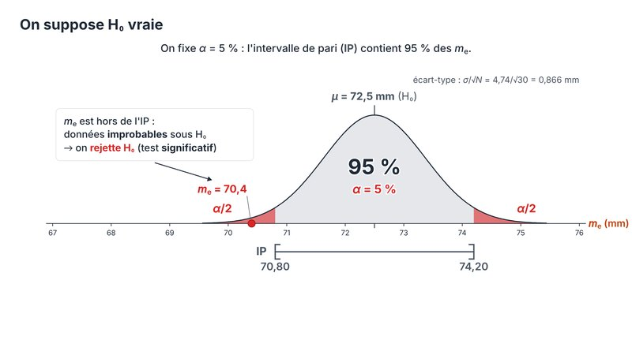
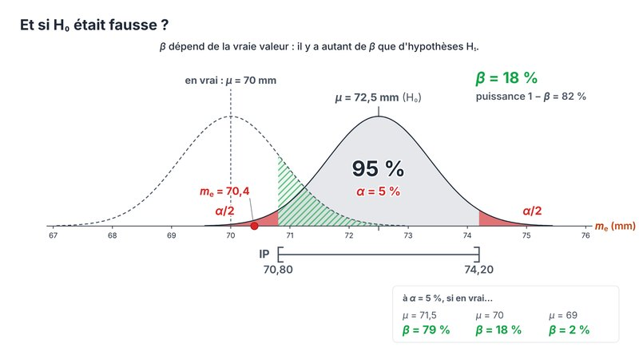
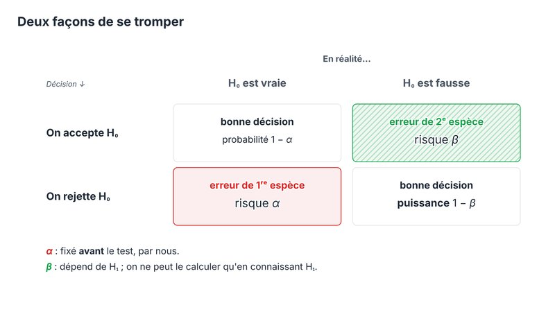
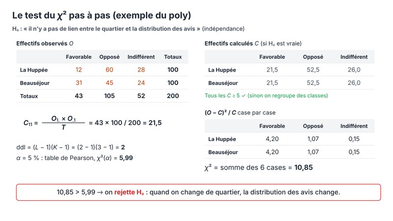
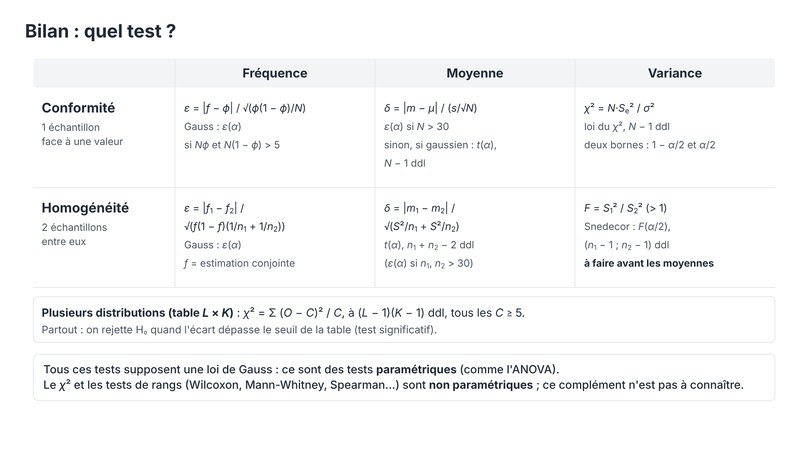

Tutorat PASS · UE4 Biostatistiques
Statistiques probabilistes
Les diaporamas animés du tutorat, d'après le poly du Pr Morin. Chaque cours est un monde de diapos : on avance clic par clic, et la touche O montre la carte du cours.
Cours 2 · Tests d'hypothèses
30 diapos · 100 étapes · version 5Rappel de l'IC, de l'IP et des tables ; H₀ et H₁, le risque α et le risque β, puissance, écart réduit, tests unilatéraux, degré de signification p ; tests de conformité, d'homogénéité et du χ².






- → ou espace avancer
- ← revenir
- ↓ rejouer l'étape
- O carte du cours
- F plein écran
- E éditer
Cours 1 · Estimation
25 diaposDistributions d'échantillonnage, estimateurs, intervalle de confiance et intervalle de pari, avec l'histoire des largeurs de main.